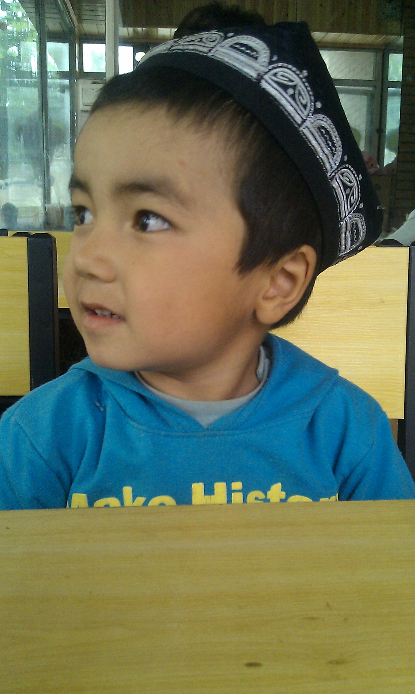
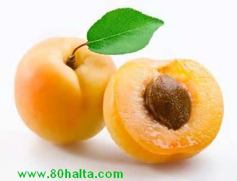
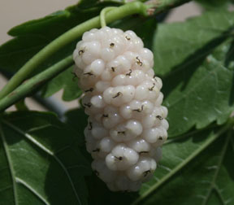
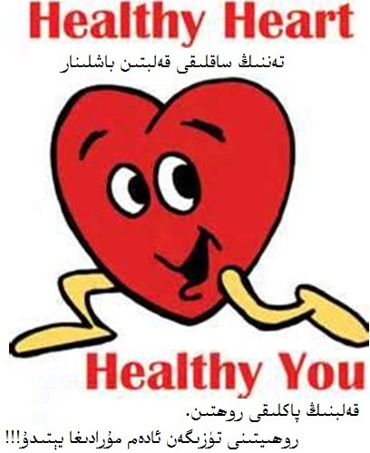
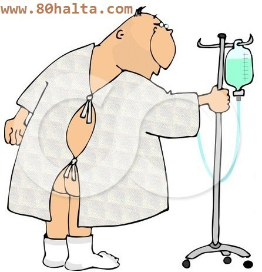
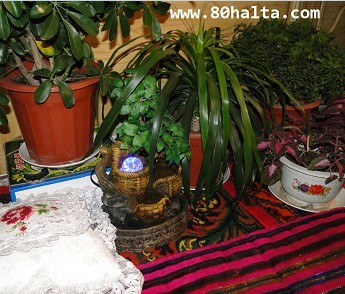
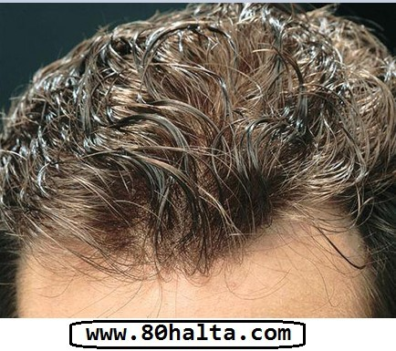

ئەسسالامۇ ئەلەيكۇم مۆھتىرەم تورداش، بلوگىمىزغا خۇش كەپسىز، قۇتلۇق قەدەملىرىڭىزگە مەرھابا!
 زەيتۇن ۋە سالات (ئارلاشما كۆكتات) ھەققىدە
زەيتۇن ۋە سالات (ئارلاشما كۆكتات) ھەققىدە
ئاپتورى:Birzat ۋاقتى:2014-05-08

كۈنىمىزدە يېمەك-ئىچمەك مولچىلىق بولسىمۇ ساغلاملىقىمىز ھەر قاچان خىرىسقا دۇچ كىلىۋاتقان ئەھۋالدا يەۋاتقان ئوزقلۇقىمىز، تۇرمۇش ئادەتلىرىمىز ھەققىدە كۆپرەك پاراڭ سىلىشىمىز نۇرمال ئىشقا ئايلىنىپ قالدى. خەلقىمىزنىڭ ئەنئەنىۋى ناشتىلىق، ئوزۇقلۇق ئۇسۇلىنىڭ ئۆزگىچە تەرەپلىرى ھەققىدە ئىلگىرى 80خالتا بلوگىدا كۆپ توختالغان ئىدىم. بولۇپمۇ گۈلقەنت، ھەسەل، جىگدە، گۈلە-قاق يەپ ئۇزۇن ئۆمۈر كۆرگەن كىشىلەر ھەققىدىكى بايانلار دېگەندەك. بۈگۈن بەزىلەرنىڭ زەيتۇن ھەققىدە سورىغان سۇئالىغا جاۋاب بەرگەچ بىردەم يەنە يەپ-ئىچىشنىڭ پارىڭىنى قىلساقمىكىن دەپ تېمىنى باشلىدىم.  تۈركيە كىنو فىلىملىرىنى كۆرۈپ يۈرۈپ ھازىر تۈرك چېيى ئىچىش بىرەر قۇر مودىغا ئايلىنىپ يەنە مودىدىن قالاي دەپ قالغىلىمۇ تۇردى، ھازىرقى پاراڭ تۈركلەرنىڭ ئەتىگەنلىك ناشتىلىق داستىخىنىدا داۋاملىق كۆرىدىغىنىمىز زەيتۇن، سالات دېگەندەكلەر كۆزىمىزگە كۆپرەك چىلىقىدۇ. زەيتۇن ھەققىدە پاراڭ بولسىلا
تۈركيە كىنو فىلىملىرىنى كۆرۈپ يۈرۈپ ھازىر تۈرك چېيى ئىچىش بىرەر قۇر مودىغا ئايلىنىپ يەنە مودىدىن قالاي دەپ قالغىلىمۇ تۇردى، ھازىرقى پاراڭ تۈركلەرنىڭ ئەتىگەنلىك ناشتىلىق داستىخىنىدا داۋاملىق كۆرىدىغىنىمىز زەيتۇن، سالات دېگەندەكلەر كۆزىمىزگە كۆپرەك چىلىقىدۇ. زەيتۇن ھەققىدە پاراڭ بولسىلا
 تۈرك چېيى دەملەش ئۇسۇلى
تۈرك چېيى دەملەش ئۇسۇلى
ئاپتورى:Birzat ۋاقتى:2013-09-28


تۈركچە چاي دەملەپ ئىچىش ئارزۇيىڭىز بولسا ياكى ھەۋەس قىلىپ قالغان بولسىڭىز يۇقۇرقى سۈرەتتە كۆرسىتىلگەندەك چەينىكىڭىز بولىشى كېرەك. تۈرك چېيى دەپ چايقۇرنىڭ ھەر خىل چايلىرىدىن سېتىۋېلىپ ئۆيدە ھەر قانچە قىلىپ چايخانىلاردىكىدەك دەملىيەلمىگەن چايخۇمارلار يالغۇز مەنلا بولمىسام كېرەك. چايقۇرنىڭ چايلىرىدىن چاققانراق بىر چەينەك قايناق سۇغا ئىككى قوشۇق، بەلكىم ئۈچ قوشۇق چاي سىلىپ خىلى ئۇزۇن قاينىتىپمۇ تۈزۈك تەمى، رەڭگى پەيدا بولماي ئاخىرى زىرىكىپ تاشلاپ قويغانلار ئەمدى مەن دېگەندەك قىلساڭلار چوقۇم تۈركچە ئاشخانا، چايخانىلاردىن قىلىشمىغۇدەك چاي دەملەشنى ئۈگۈنۈپ كېتەلەيسىلەر.
ئاخىرقى بىر قۇتا كولا...
ئاپتورى:Birzat ۋاقتى:2013-09-28
كولا ئىچىپ باقمىغىلى خىلى ۋاقىت بولغان ئىدى. بۈگۈن كەچقۇرۇن مايلىقراق تاماق يەپ قىلىپ كۆڭلۈم مۇزدەك كولا تارتىپ قالدى. ئايلىنىپ كەلگەچ دۇكاندا بىردەم ئولتۇرۇپ كىلەي دەپ سىرتقا چىقىپ كوچا دوقمۇشىدىن بىر قۇتا پەپسى كولا سېتىۋىلىپ خەقلەرنىڭ، بولۇپمۇ مەن كولا ئىچىشتىن پەرھىز بۇيرۇيدىغان خىرىدارلىرىمنىڭ كۆرۈپ قىلىشىدىن ئەنسىرەپ قولۇمدىكى كولانى يوشۇرۇپراق كېتىۋاتسام 30 ياشلارغا بارماي تۇرۇپلا دىئابىت كېسىلى بولۇپ قالغان كونا خىرىدارىم ئۇچراپ ئەھۋال سورىغاچ يولۇمنى توستى. <<ئاپلا>>، دېدىم ئىچىمدە.
خەتكۈش: كولا
چايخۇمارلىق ھەققىدە ئەمەلىي پاراڭ
ئاپتورى:Birzat ۋاقتى:2013-09-27
 دادام مىجەزى سەپرا بولىشىغا قارىماي ئىسسىقلىق دورا-دەرمان تەڭشىتىپ ئاچچىق دەملەپ ئىچەتتى. قارا چاي دېگەننىمۇ <<ئاتنىڭ قېنىدەك قېپ-قىزىل >> قېنىق دەملەپ ئىچمىسە ئۇنىمايتتى. بەزىدە ئۆيدە ئىسسىقلىق دورا چاي تۈگەپ قالغان بولسا قايناق سۇغا قارامۇچ دەملەپ ناۋات سىلىپ ئىچكىننى كۆرەتتۇق.
دادام مىجەزى سەپرا بولىشىغا قارىماي ئىسسىقلىق دورا-دەرمان تەڭشىتىپ ئاچچىق دەملەپ ئىچەتتى. قارا چاي دېگەننىمۇ <<ئاتنىڭ قېنىدەك قېپ-قىزىل >> قېنىق دەملەپ ئىچمىسە ئۇنىمايتتى. بەزىدە ئۆيدە ئىسسىقلىق دورا چاي تۈگەپ قالغان بولسا قايناق سۇغا قارامۇچ دەملەپ ناۋات سىلىپ ئىچكىننى كۆرەتتۇق.
ئەتراپتىكىلەرنىڭ پات-پات دادامغا بۇ ھەقتە ئاگاھلاندۇرۇش بىرىپ ئىسسىقلىق دورا چايلارنىڭ جىگەرگە، كۆزگە يامان تەسىرى بولىدۇ دەپ ئەسكەرتىپ تۇرۇشلىرىنى ئاڭلاپ تۇراتتۇق. بۇ گەپلەرنى ئاڭلىغان ۋاقىتتا بەزىدە ئۇلارغا ئۆزىنىڭ كۆز قاراشلىرىنى سۆزلەپ ‹‹سوغۇق ئىش›› قىلىدىغان ياكى سوغۇقجان كىشىلەرگە ئىسسىقلىق دورا چاي زىيان قىلمايدۇ، مەندەك گەجخاچى ئادەمگە
دۇنيا بالىلار كۈنى ھارپىسىدا بىر-ئىككى ئېغىز پاراڭ
ئاپتورى:Birzat ۋاقتى:2013-05-29

باللىرىمىزنى كارتون دۇنياسى بىلەن يەسلى تارتىۋالمىسۇن دېيىشتۇق. بۇنداق دېيشىمدە ئىلگىرى باللىرىمغا كارتوننى كۆپ قويۇپ بەرمەيدىغان ۋاقىتلاردا كەچلىرى مەن ئېيتىپ بەرگەن ھېكايىلەرگە قۇلاق سىلىپ ئاڭلايتتى، مەن بىلەن ئويناپ ھاردۇرۋېتەتتى، مەن سىرتقا ماڭغاندا ئارقامدىن ‹‹ئاللاھقا ئامانەت›› دەپ ئۇزۇتۇپ چىقاتتى. ئۆيگە كەلسەم ئويناۋاتقان يېرىدىن ئالدىمغا يۈگۈرۈپ كىلىپ ‹‹ئەسسالامۇ ئەلەيكۇم دادو، كەلدىڭما؟!! كەچتە نېمە ھېكايە ئېيتىپ بىرىسەن!!!›› دەيتتى. ئارىدا ئالدىراش بولۇپ كەتكەندەك بولۇپ باللارغا كۆڭۈل بۆلۈپ بولالماي قالغاندا كومپيۇتېرنى ئۆزلىرى ئىچىشىپ كۆرىدىغان كارتونلارنى ئىزدەپ تېپىپ ئولتۇرۇپ كۆرۈپ كېتىشسە، يېنىغا بىرىپ چاقىرساممۇ ئاڭلىمايدۇ. 3 كەپسىز ئوغۇل ھېچقانداق جىدىلى يوق كارتون كۆرۈپ ئولتۇرۇپ بەرسە خاتون كىشى دېگەنگە خۇيمۇ ياقسا كېرەك، ئۆي ئىشلىرىنى قىلىۋالدىم دەپ شۇنىڭغا خوش. ئەتتىگىنى دۇكانغا ماڭسام ئارقامدىن سۆيۈپ ئۇزىتىدىغان، كەچلىرى ھىكايەمگە قۇلاق سالىدىغان تاتلىق ئوغۇللىرىمنى كارتون دۇنياسىدىكى ئوۋتىمەن، چاشقان مۈشۈك، زەربىدار توشقان، چاقماق كۈچۈكلەرگە تارتقۇزۇپ قويۇپتىمەن. مەن ئويلاۋاتقان مۇنداق بىر ئىش بار:
خەتكۈش: بالىلىق
ئۆرۈك پىشسا - ئۆرۈك ھەققىدە تېما يوللىدۇق!
ئاپتورى:Birzat ۋاقتى:2013-05-28

ئۆرۈكنىڭ تەبئىتى: بالدۇر پىشىدىغانلىرى - ھۆل سوغۇق ، كېچىكىپ تومۇز يەپ پىشىدىغىنى - ھۆل ئېسسىق، تومۇزنىڭ ئاخىرلىرى پىشىپ شاختا ئۇزۇنراق تۇرۇپ قالغانلىرى قۇرۇق ئېسسىق بولىدۇ.
خۇسۇسىيىتى: ئۇسسۇزلۇقنى بېسىش، سەپرانى قايتۇرۇش، توسالغۇلارنى ئېچىش، ماددىلارنى يۇمشۇتۇش، راكنىڭ ئالدىنى ئىلىش، يۈرەكنى ئاسراش قاتارلىق خۇسۇسىيەتلىرى بار. زىيانلىق تەسىرى:
ئاق ئۈجمىنىڭ خۇسۇسىيەتلىرى ھەققىدە
ئاپتورى:Birzat ۋاقتى:2013-05-27

ئەجداتلىرىمىزدىن قالغان «ئۈژمە ئۆستۈرگەن كىشىنىڭ ئۈژمىسى پىشىپ مېۋىسى يەرگە تۆكۈلگەندە، ئۇنىڭ گۇناھى بولسا ئۈژمە بىلەن بىللە تۆكۈلىدۇ»، «ئۈژمە پىش، ئاغزىمغا چۈش» دېگەنگە ئوخشاش ماقال-تەمسىللەر بىزگە خەلقىمىزنىڭ ئۇزاق زامانلاردىن بۇيان، ئۈژمىنى ئالاھىدە چوڭ بىلىپ ئۆستۈرۈشكە ئەھمىيەت بېرىپ كېلىۋاتقانلىقىنى چۈشەندۈرۈپ بېرىدۇ.
ئاق ئۈجمە مېۋىسىنىڭ قان كۆپەيتىپ، مېڭە، ئۆپكە، جىگەر، بۆرەككە قۇۋۋەت بىرىش، ماغدۇرلاندۇرۇش....
خەتكۈش: ئۈجمە
 بىرزات دۇكىنىدىكى ھەسەل، گۈلقەنت ئۇچۇرلىرى
بىرزات دۇكىنىدىكى ھەسەل، گۈلقەنت ئۇچۇرلىرى
ئاپتورى:Birzat ۋاقتى:2013-05-23

ھەسەل دېگەننى زاۋۇتتا ئىشلىگىلى بولمىغاندىكىن ھەر يىلى چېچەك پەسلىدە ھەسەل ھەرىلىرىنى يايلىتىپ ھەسەل يېغىدىغان ئىش ئىكەن. ھەسەل ھەرە كۆنىكىگە يېغىلىپ پىشىپ تەييار بولغۇچە يەنە خىلى ۋاقىت ئۆتىدۇ. ھەسەل كۆنەكتە قانچە ئۇزۇن تۇرسا ھەسەل مىقدارى ئازلاپ كەتكەن بىلەن سۇ مىقدارى ھاۋاغا ئۆرلەپ ئوزۇقلۇق قىممىتى ئاشىدۇ ھەم ئۇزۇن ۋاقىت ساقلاپ ئىستىمال قىلغىلى بولىدۇ. ھەسەل مىقدارنىڭ ئازلاپ كېتىشىدىن ئەنسىرەپ بازارغا تېز ئۈلگۈرتۈش ئۈچۈن كۆنەكتىن ئالدىراپ ئىلىنغان ھەسەل مىقدارى كۆپ، ئۆزى سۈيۇق، خام بولىدۇ. بۇنداق ھەسەلنىڭ سۇ مىقدارى كۆپ، ئوزۇقلۇق قىممىتى تۆۋەن بولىدۇ. ساقلاش ۋاقتى قىسقا بولىدۇ.
ساپ ھەسەللەرنىڭ شىپالىق خۇسۇسىيەتلىرى ئاساسلىقى تۆۋەندىكىچە بولۇپ ...
 كۆكنار غوزىكىدە چاي دەملەپ ئىچىشنىڭ ئاقىۋېتى ھەققىدە
كۆكنار غوزىكىدە چاي دەملەپ ئىچىشنىڭ ئاقىۋېتى ھەققىدە
ئاپتورى:Birzat ۋاقتى:2013-05-22

ھازىر بەزى بىر چايخانىلاردا ئىسمى ناھايىتى چىرايلىق بولغان <<مەرۋايىت چېيى>> نامىدىكى بىر چايغا بەزى كىشىلەر ئاقىۋېتىنى ئويلاپ كۆرمەستىن ياكى بىلمەستىن مەپتۇن بولۇپ قالغان بولۇپ، بۇ ھەقتە مەندىن سورىغانلار خىلى كۆپ بولغان بولغاچقا شۇ چاينى بىلمەي ئىچىۋاتقانلار بۇنىڭ ئاقىۋىتىنىڭ ياخشى بولمايدىغانلىقىنى، كۆكنار غوزىسى دەملەپ ئىچكەنلىك ئەپيۇن ئىستىمال قىلغانلىق، ئەپيۇن ئىستىمال قىلغانلىق ئاستا-ئاستا خۇمار قىلىپ ئەقلىنى، جىسمانىي قۇۋۋەتلەرنى خورىتىپ ئۆزىنى تۈگەشتۈرگەنلىك، ئەۋلاتلىرىمىزنىڭ پاكىز تۇغۇلىشى، ساغلام چوڭ بولىشىغا سەلبىي تەسىر پەيدا قىلغانلىق، شۇڭا ئادەملەر، كىشىلەر، دوستلار ماڭا قۇلاق سىلىڭلار، مەن بىلگىنىمنى دېدىم، ۋاقىتلىق راھەت، ھوزۇر قوغلىشىپ ئۆزۈڭلارنى ھالاكەتكە تاشلىماڭلار!
خەتكۈش: ئەپيۇن،
يالغان ھامىلدارلىق ھەققىدە
ئاپتورى:Birzat ۋاقتى:2013-03-11
 80خالتا بلوگىنىڭ ئوقۇرمەنلىرىدىن بولغان بىر خانىم ياۋرۇپا ئەللىرىنىڭ بىرىدىن تېلفۇن قىلىپ كاللىسىدىن ئۆتمىگەن بىر ئىش توغرىسىدا مەندىن مەسلەھەت سورىدى. بۇ خانىمنىڭ ئېيتىشىچە تۇنجى پەرزەنتىگە قورساق كۆتۈرگەن ۋاقىتتىكىگە ئوخشاش بۇ قېتىممۇ ھەيز توختاش، سېزىك ئالامەتلىرى كۆرۈلۈش بولۇپ قورساقتا ھامىلدارلىقنىڭ باشلىنىشىدا بولىدىغان ئالامەتلەر ئاساسەن دېگۈدەك كۆرۈلگەندىن كىيىن سۈيدۈك تەكشۈرتۈپ كۆرسە ھامىلدارلىق بەلگىسى كۆرۈلمىگەن، بۇ قانداق ئىشتۇ دەپ دوختۇرغا كۆرۈنگەندە دوختۇرمۇ تەكشۈرۈپ ھامىلدار ئەمەسلىكىنى ئېيتقان. يولدىشىمۇ، سىز پەرزەنتكە ئامراق بولغاچقا كاللىڭىزغا كىرىۋىلىپ سىزدە شۇنداق خاتا سېزىم بولغان گەپ دەپتۇ.بۇ خانىم ئۆزىنى قورساق كۆتۈردۈم دەپ قارىغان بولسىمۇ ئۆزىنىڭ ھامىلدار ئىكەنلىكىگە ھېچكىمنى ئىشەندۈرەلمىگەن. شاگىرت چاغلىرىمدا بۇ ھەقتە ...
80خالتا بلوگىنىڭ ئوقۇرمەنلىرىدىن بولغان بىر خانىم ياۋرۇپا ئەللىرىنىڭ بىرىدىن تېلفۇن قىلىپ كاللىسىدىن ئۆتمىگەن بىر ئىش توغرىسىدا مەندىن مەسلەھەت سورىدى. بۇ خانىمنىڭ ئېيتىشىچە تۇنجى پەرزەنتىگە قورساق كۆتۈرگەن ۋاقىتتىكىگە ئوخشاش بۇ قېتىممۇ ھەيز توختاش، سېزىك ئالامەتلىرى كۆرۈلۈش بولۇپ قورساقتا ھامىلدارلىقنىڭ باشلىنىشىدا بولىدىغان ئالامەتلەر ئاساسەن دېگۈدەك كۆرۈلگەندىن كىيىن سۈيدۈك تەكشۈرتۈپ كۆرسە ھامىلدارلىق بەلگىسى كۆرۈلمىگەن، بۇ قانداق ئىشتۇ دەپ دوختۇرغا كۆرۈنگەندە دوختۇرمۇ تەكشۈرۈپ ھامىلدار ئەمەسلىكىنى ئېيتقان. يولدىشىمۇ، سىز پەرزەنتكە ئامراق بولغاچقا كاللىڭىزغا كىرىۋىلىپ سىزدە شۇنداق خاتا سېزىم بولغان گەپ دەپتۇ.بۇ خانىم ئۆزىنى قورساق كۆتۈردۈم دەپ قارىغان بولسىمۇ ئۆزىنىڭ ھامىلدار ئىكەنلىكىگە ھېچكىمنى ئىشەندۈرەلمىگەن. شاگىرت چاغلىرىمدا بۇ ھەقتە ...
 <<ئىگىلىك سەھنىسى>> گە قاتنىشىپ تىلۋېزورغا چىقتىم...
<<ئىگىلىك سەھنىسى>> گە قاتنىشىپ تىلۋېزورغا چىقتىم...
ئاپتورى:Birzat ۋاقتى:2013-02-11
ئۈرۈمچى تىلۋىزىيە ئىستانسىدا قويۇلغان تۇنجى سان <<ئىگىلىك سەھنىسى>> پروگراممىسىغا ماھىر سۈپىتىدە قاتنىشىپ تىلۋېزورغا چىقتىم. پروگرامما قويۇلغاندىن كىيىن www.80halta.com بلوگىنىڭ زىيارەتچىلەر سانى بىر ھەپتىگىچە 300-400 ئەتراپىدا ئۆرلەش ھالىتىدە تۇردى. 300-400 IP ئۇيغۇر بلوگلىرى ئۈچۈن ئۇنچە بەك ئاز سان ئەمەس. پروگراممىدا سۆزلەش نۆۋىتى كەلگەندە 80خالتا بلوگ ئادرىسىنى تولۇق قىستۇرۇپ ئۆتكەننىڭ پايدىسى بوپتۇ . . . تۇنجى سان پروگرامما بولغاچقا سۈپەت. ئورۇنلاشتۇرۇش جەھەتتە يىتەرسىز تەرەپلەرنىڭ بارلىقىنى رىژىسورمۇ ئىتىراپ قىلدى. مەنمۇ تۇنجى قېتىم تېلۋېزورغا چىقىدىغان بولغاچقا سەل جىددىلىشىپ قالغان چىراي كۆرۈنۈپ قاپتىمەن. ئوبدان سۆزلىيەلمىگەندەكمۇ كۆرۈندۈم. لىكىن تېلۋېزوردا كۆرگەنلەر، ۋاي ھەكىم سىلىنى تىلۋىزوردا كۆردۇق، ئوبدان سۆزلىدىلە دېيىشتى. ئاڭلىغانلار، ئاپلا، شۇ پروگراممىنى كۆرەلمەي قاپتىمىز، ئىمكان بولسا 80خالتا بلوگلىرىغا چىقىرىپ قويغان بولسىلا، بىزمۇ كۆرۈپ باقايلى دېيىشكەن بولدى.
تۆۋەندە شۇ قېتىملىق <<ئىگىلىك سەھنىسى>> پروگراممىسىنىڭ ئۇلىنىش ئادرىسىنى قالدۇرۇپ قويدۇم.
مۇكاپاتقا ئىرىشكەن بويۇملارنى ساتىمەن
ئاپتورى:Birzat ۋاقتى:2013-01-03

مەن شۇ يەردە چوڭ بولمىغاندەك يىزىدا سوغۇقنىڭ بەك بولىدىغانلىقىنى بىلمەيدىغاندەك ھەيران قالدىم، تاھارەت ئالغىلى چىقىپ كىرگۈچە سوغۇق ۋەھشىي چاقىدىكەن ئەمەسما. مېنىڭ ياتاق ئۆيۈمغۇ نەچچە ۋاقىتتىن ئوت يېقىلمىغان بولغاچقا يېرىم كىچىگىچە مەشتە گۈرۈلدەك ئوت كۆيگەن بولسىمۇ ئوت ئۆچىشىگە ئۆي سوۋۇپ مۇزلاپ كېتىپتۇ، سوغۇقتىن ئويغىنىپ كېتىپتىمەن، باللىرىم تاتلىق ئۇخلاۋاتىدۇ، لىكىن يوتقاندىن چىقىپ قالغان قوللىرىنى تۇتۇپ باقسام مۇزدەكلا، خوتۇننى ئويغۇتۇپ يۈرمەي ئۆزۈم پالاقشىپ يۈرۈپ مەشكە ئوتنى قايتىدىن يېقىپ ئۆينى ئىسسىتتىم. مۇشۇ تەرىقىدە 3 كۈن تۇرۇپ ئاخىرى، ۋاي ئانا سوغۇق سەل ياماندەك تۇردۇ بۇ يىل، بىزگە ئىجازەت بىرىڭلار، بولسا سىلەرمۇ بىز بىلەن بىزنىڭكىگە بىرىڭلار، قەھرىتان قىشنى بىزنىڭكىدە ئىسسىق ئۆتكۈزۈپ چىقارسىلەر دېسەم، ئانام كۈلۈپ: يىلدا قىشتا مۇشۇنداق سوغۇق بولىدۇ بالام، ھىلىمۇ بىز نەچچە يىلدىن مۇزلاپ قالماپتىمىز، ئۇنچىۋالا چىدىماسلىق قىلما دەيدۇ.
شۇنداق قىلىپ گەپ سەل ئۇزۇراپ كەتتى. ئەمدى مەن دېمەكچى...
 ھەپتىدە 5 رېتسىپ - 13
ھەپتىدە 5 رېتسىپ - 13
ئاپتورى:Birzat ۋاقتى:2013-01-03
بىر چىمدىم پاقايوپۇرمىقى ئۇرۇقىنى يۇمشاق ئېزىپ كالا سۈتى بىلەن قوشۇپ يەپ بەرسە مەنىي ئىقىپ كېتىشكە مەنپەئەت قىلىدۇ. خورما ئۇرۇقىنى قۇرۇتۇپ يۇمشاق تالقانلاپ تەڭ مىقداردا شىكەر قوشۇپ يەپ بەرسە كۆپ ئىھتىلام بولۇشقا مەنپەئەت قىلىدۇ. ئەگەر شەھۋىتى كۈچىيىپ كېتىش، جىنسىي ھەۋەس سېزىمى ئىشىپ كېتىپ كۆپ ئىھتىلام بولسا قۇرۇق يۇمغاقسۈتنى يۇمشاق تالقانلاپ تەڭ مىقداردا شىكەر بىلەن كۈندە بىر قوشۇقتىن يەپ بەرسە شىپا قىلىدۇ. ئەگەر شۇ سەۋەبتىن قولدا لەززەتلىنىشكە ئۈگۈنۈپ قالغان بولسا شەھۋەتنى تۆۋەنلىتىپ بۇ ئادەتتىن قول ئۈزۈش ئۈچۈن ھۆل يۇمغاقسۈتنى ئىزىپ سۈيىنى چىقىرىپ كۈندە بىر قوشۇقتىن ئۇدا ئۈچ كۈن ئىچىپ بەرسە پەيدىسى بولىدۇ. شەھۋەت بىسقىغا چۈشكەندىن كىيىن يۈمغاقسۈت سۈيىنى داۋاملىق ئىچمەسلىك كېرەك.
بىر كىمنىڭ كۆزىدىن تولا ياش ئاقسا....
ساغلام ياشاپ كېسەللىكنىڭ ئالدىنى ئىلىشتىكى ئۈچ موھىم ئىش
ئاپتورى:Birzat ۋاقتى:2012-12-08
ساغلام بولمىغان روھىي ھالەتنىڭ ئىجتىمائىي تۇرمۇشقا كۆرسىتىدىغان تەسىرلىرى ھەققىدە باشقىلارغا ياردەم قىلىشنى ئاۋارچىلىق ھېسابلاپ ئادەمنىڭ ئۆلۈپ كېتىۋاتقىنىغا پەرۋا قىلماسلىق، 2012-يىلى قىيامەت بولىدۇ سەپسەتىسىنىڭ كۈچلۈك ۋەھىمە پەيدا قىلىشى دېگەندەكلەرنى مىسالغا ئىلىشىمىز مومكىن.
مېنىڭ تېبابەت ئۈگۈنۈش ۋە ئەمەلىي ئىزدىنىش جەريانىدا ھېس قىلغىنىم شۇ بولدىكى - ساغلام ياشاپ كېسەللىكنىڭ ئالدىنى ئىلىش ئۈچۈن ھاياتتا مۇنداق ئۈچ ئىش ئىنتايىن موھىمكەن:
1.ئىلمى ئوزۇقلىنىش.
2.توغرا بولغان تۇرمۇش ئادىتى
3.ساغلام روھىي ھالەت
...................................
<<ئىگىلىك سەھنىسى>> پروگراممىسىغا تەييارلىق ۋە بۇ ھەقتە قىسقىچە خاتىرە
ئاپتورى:Birzat ۋاقتى:2012-12-07
بىرەر يۈز ئادەمنىڭ ئالدىدا جىددىيلەشمەستىن ئوتتۇرغا چىقىپ سۆز قىلىش ئۈچۈن خىلى زور جۈرئەت كېتىدىغان ئىش ئىكەن. بولۇپمۇ تېلۋىزىيە ئىستانسىنىڭ پروگراممىسى دېسە قىلىدىغان سۆزۈمنى تاپالماي قېزىرىپ، تاتىرىپ يۈرەرمەنمۇ دېگەن ئەندىشە بىلەن نەچچە قېتىم بۇ پروگراممىغا قاتنىشىشتىن ۋاز كېچىش خىيالىغىمۇ كىلىپ قالدىم. ۋاقىت قىستاپ كىلىۋاتاتتى، ھېچقانداق تەييارلىق قىلالماي يۈرەتتىم، راستىنى دېگەندە مېنى بۇ پروگراممىغا تەكلىپ ئەتكەن كىشى قانداق تەييارلىق قىلىشىم كېرەكلىكى ھەققىدە ماڭا تۈزۈكرەك بىر نېمە دېمىگەن ئىدى. پەقەتلا مەركىزى تېلۋىزىيە ئىستانسىنىڭ ئىگىلىك تېكلىگۈچىلەر ھەققىدە ئىشلىگەن مۇسابىقە...
ئەرلەر ساغلاملىقى ۋە ھەسەل
ئاپتورى:Birzat ۋاقتى:2012-12-07

ئۇيغۇر مۇسۇلمانلىرى ۋە ساغلاملىق
ئاپتورى:Birzat ۋاقتى:2012-11-23

بۇ بەكلا چوڭ تېما بولۇپ ئەتراپلىق يورۇتۇپ بىرىش ئۈچۈن كۆپ كۈچ سەرىپ قىلىشقا توغرا كىلىدۇ، مېنىڭ بۇ يەردە توختالماقچى بولغىنىم ئىسلام ئەقىدىسىنى يادىرو قىلغان دىنىي ئەھكاملارنىڭ ئۇيغۇر مۇسۇلمانلىرىنىڭ سالامەتلىكىگە كۆرسەتكەن تەسىرى ھەققىدە كۆز قاراشلىرىمنى ئوتتۇرغا قويۇپ باقماقچىمەن.
تېمىنىڭ تەرەققىياتى تۆۋەندىكى كىچىك سەھىپىلەر بويىچە ئىزاھلىنىپ ماڭىدۇ:
1.مەنىۋى ھوزۇر
2. ياشاش ئادىتى
3.پاكىز، ھالال يېمەكلىكلەر
4.تازىلىق
5. تەبىئەتكە كۆڭۈل بۆلۈش
6.جامائەتچىلىك ئېڭى ۋە قىرىنداشلىق
7.ئىسلام ئەقىدىسىنىڭ ئۇيغۇر تېبابىتىگە كۆرسەتكەن تەسىرلىرى
[ئەل ئىچى رېتسىپلىرى] ھەپتىدە بەش رېتسىپ
ئاپتورى:Birzat ۋاقتى:2012-11-19
 خوتەنگە بارغۇچە ئاپتۇبۇستا دېرىزە يېنىدا ئولتۇرغان چوپچوڭ بىر ئەر ۋاقىراپ كەتتى، قارىسام پاقالچىقىنىڭ پېيى تارتىشىپ قالغان ئىكەن، ھە دەپ پۇتىغا ئۇرغىلى تۇرۇپتۇ. مەن يېنىغا بىرىپ تارتىشىپ قالغان پەيگە ئۇرغان بىلەن قويۇپ بەرمەيدۇ، ماڭا بەرسىلە، چارىسىنى مەن قىلىپ باقاي دەپ پۇتلىرىنى تۈزلەپ بارماقلىرىنى ئارقىغا تەكرار قايرىپ بەرگەندىن كىيىن تارتىشىپ قالغان پەي ئەسلىگە كەلدى. تېۋىپ-دوختۇر بولمىسىمۇ ئادەتتىكى تېببى ساۋاتلاردىن خەۋەردار بولۇش تولىمۇ زۆرۈر ئىكەن دەپ ئويلاپ قالدىم.
خوتەنگە بارغۇچە ئاپتۇبۇستا دېرىزە يېنىدا ئولتۇرغان چوپچوڭ بىر ئەر ۋاقىراپ كەتتى، قارىسام پاقالچىقىنىڭ پېيى تارتىشىپ قالغان ئىكەن، ھە دەپ پۇتىغا ئۇرغىلى تۇرۇپتۇ. مەن يېنىغا بىرىپ تارتىشىپ قالغان پەيگە ئۇرغان بىلەن قويۇپ بەرمەيدۇ، ماڭا بەرسىلە، چارىسىنى مەن قىلىپ باقاي دەپ پۇتلىرىنى تۈزلەپ بارماقلىرىنى ئارقىغا تەكرار قايرىپ بەرگەندىن كىيىن تارتىشىپ قالغان پەي ئەسلىگە كەلدى. تېۋىپ-دوختۇر بولمىسىمۇ ئادەتتىكى تېببى ساۋاتلاردىن خەۋەردار بولۇش تولىمۇ زۆرۈر ئىكەن دەپ ئويلاپ قالدىم.
2. بىر تونۇشۇم قىرغىزىسىتاندىكى ۋاقىتتا كىتابتىن يۇقۇرى قان بېسىم، قان قويۇقلۇق ئۈچۈن مۇنداق بىر رېتسىپنى كىتابتىن كۆرۈپ ئىشلىتىپ ئوبدان ئۈنۈمىنى كۆرۈپتۇ:
 ناشتىلىق ھەققىدە ئىككى كەلىمە
ناشتىلىق ھەققىدە ئىككى كەلىمە
ئاپتورى:Birzat ۋاقتى:2012-10-10

جاھانغا مەشھۇر نامى پۇر كەتكەن تېۋىپ لوقمان ھەزرەتلىرىنىڭ كۈيئوغلى ناھايىتى ساغلام كىشى بولۇپ بىرەر قېتىممۇ لوقمان ھەكىمگە كېسەل كۆرسەتكىلى كەلمەپتۇ. بۇنىڭدىن ئەجەبلەنگەن لوقمان ھەكىم قىزىدىن سوراپتۇ:
- ئىرىڭ كېسەل كۆرسەتكىلى بىرەر قېتىممۇ ئالدىمغا كىلىپ باقمىدى، ئۇ تەن ساقلىقىنى ئاسراشتا ئۆزىگە قانداق سەۋەب قىلىدۇ؟
 ئۆلۈكلەرنىڭ تېرىكلەرنى يېنىغا تارتىشى...
ئۆلۈكلەرنىڭ تېرىكلەرنى يېنىغا تارتىشى...
ئاپتورى:Birzat ۋاقتى:2012-10-09

ئۆلدى دېگەن گۇمان بىلەن يەرلىكىدە قويۇپ قىلىش، كىيىن تېرىكلەرنىڭ چۈشى بۇزۇلۇپ قەۋرىنى ئاچسا كىپەنلىرىنى يىرتىپ ، توپىلارنى تاتىلاپ دېگۈدەك ھالەتتە تۇرۇپتۇ دەيدىغان گەپلەرمۇ ئانچە مۇنچە بولۇپ تۇرىدۇ. لىكىن گۆردىكى ئادەم راستىنلا ئۆلگەن ياكى خاتا كۆمۈپ تاشلانغان بولسۇن، ئۇنىڭ سېرتتىكى تېرىك ئادەملەرگە تەسىر قىلالىشى، چۈشىگە كىرىپ بىئارام قىلىشى نېمە سەۋەپتىن بولىشى مومكىن؟ ... ئۆلگەن ئادەم بىلەن تېرىكلەرنىڭ رېشتىنى باغلاپ تۇرىدىغان بىرەر يوشۇرۇن سىر بارمۇ؟ بۇ ھەقتە كۆز قاراشلارنى كۆرۈپ باقماقچى بولسىڭىز تەپسىلاتىغا نەزەر سالغايسىز!
خەتكۈش: ئۆلۈك
دىئالوگ-مەڭگۈلۈك گۈزەللىك ئىستىگۈچىلەر كىرگەي!
ئاپتورى:Birzat ۋاقتى:2012-09-29
ئايال پادىشاھلارمۇ قېرىپ يۈزلىرى دۇنيا خەرىتىسىدەك بولۇپ كەتكىننى كۆرۈپ تۇرىمىز، قېرىمايدىغان، ئاجىزلىمايدىغان، گۈزەللىكىدىن قالمايدىغان ئىش بولسا شۇلار بىر ئۆمۈر قېرىمىسا بولاتتى. لىكىن رىئاللىق رەھىمسىزدۇر. تۇغۇلماق، قىرانلىق، ئاجىزلىشىش، ئۆلۈم يارالمىش قانۇنىيەتلەردىندۇر. چوقۇم مەڭگۈ قېرىماي ياش تۇرسام بولىتتى دەپ تۇرۇۋالسىلا، تۆۋەندىكى تەكلىپنى بىرىمەن:
 جىنسىي مۇناسىۋەت بىلەن ئانانىزىمنىڭ ئادەم بەدىنىگە كۆرسىتىدىغان پەرقلى
جىنسىي مۇناسىۋەت بىلەن ئانانىزىمنىڭ ئادەم بەدىنىگە كۆرسىتىدىغان پەرقلى
ئاپتورى:Birzat ۋاقتى:2012-07-20
80خالتا بلوگىدا ئانانىزىم ھەققىدە تېمىلار يېزىلغان ھەم تورداشلارنىڭ سۇئاللىرىغا يېزىلغان جاۋابلار يوللانغاندىن كىيىن ئەر-ئاياللىق جىنسىي مۇناسىۋەت بىلەن ئانانىزىمنىڭ ئوخشاشلا ھاياجانلىنىش، مەنىي چىقىرىپ بوشىش جاريانى ئىكەنلىكىنى، شۇنداق تۇرۇقلۇق ئانانىزىمنىڭ قانداقلارچە زىيانلىق ئىش بولىدىغانلىقىنى چۈشۈنەلمەي مەندە چۈشەنچە تەلەپ قىلغانلار كۆپ بولغان. يەنە تۈنۈگۈن بىر تورداش تۆۋەندىكى سۇئالنى سوراپتۇ:
ئانانىزىم بىلەن ئادەتتىكى نورمال جىنسىي مۇناسىۋەتنىڭ ئادەم بەدىنىگە بولغان تەسىرىدە قانداق پەرىقلەر بار ، ئەجىبا يول ئوخشىمىغان بىلەن مەنزىل بىرغۇ ؟
نەچچە ۋاقىتتىن يىزىلغان بۇ ھەقتىكى قاراشلارنىڭ يەنىلا قانائەتلىنەرلىك بولمىغانلىقى ھەم بۇ ھەقتىكى سۇئاللارغا جاۋاب بىرىش پەيتى كىلىپ قالغانلىقى سەۋەبلىك <<ئەر-خوتۇنلۇق جىنسىي مۇناسىۋەت بىلەن ئانانىزىمنىڭ ئادەم بەدىنىگە كۆرسىتىدىغان پەرقلىق تەسىرلىرى >> دېگەن سىلىشتۇرما ماقالىنى يېزىپ دىققىتىڭلارغا سۇندۇم. تەكلىپ-پىكىر بىرىشىڭلارنى سورايمەن.
___________________ بىرزات
خەتكۈش: ئانانىزىمغا خۇمار
<<بىرزات>> دىن بىرسىلا بار
ئاپتورى:Birzat ۋاقتى:2012-07-10

ئىلگىرى ھېيتگاھ ئەتراپىدا يىراقتىن 80خالتا دۇكىنى ھەم بىرزات ئەپەندىمنى ئىزدەپ كەلگۈچى خىرىدارلىرىمىز مېنى تاپالماي باشقا دورا-دەرمەك دۇكانلىرىغا كىرىپ سورىسا ئۆزلىرىنى ‹‹80خالتا›› دۇكىنى مۇشۇ دەپ كۆزىنى پارقىرتىپ تۇرۇپلا يالغان ئېيتىپ دورا-دەرمەك ساتقۇچىلار بولغان. ئۇ خىرىدارلار بىرزات ئەپەندىمنىڭ توردىكى ئوبرازىغا ئىشىنىپ خاتا كىرىپ قالغان ‹‹80خالتا›› دۇكانلىرىدىن ئالغان مەھسۇلاتلىرىدىن رازى بولماي، 80خالتا بلوگىغا كىرىپ تېلفۇن نۇمۇرۇمنى ئىزدەپ تېپىپ ماڭا تېلفۇن قىلىپ خەختىن ئالغان مەھسۇلات ئۈچۈن مەندىن ھېساب ئالىدىغان ئىشلار بولغان. كىيىن ئەھۋالنى بىرەر قۇر ئىگەللىگەندىن كىيىن باشقىلارنىڭ 80خالتا نامىنى سۈيئىستىمال قىلىپ خىرىدارلارغا يالغان ئېيتقانلىقى، خىرىدارلىرىمىزنىڭمۇ ياخشىراق سۈرۈشتۈرمەي تۇرۇپ مەن توردىكى ‹‹80خالتا›› شۇ دېسە ئىشىنىپ قالغانلىقى دېگەندەكلەرنى بىرەر قۇر چۈشەندۈرگەندىن كىيىن ئۇ خىرىدارلىرىمىز ئۇلارنى شەرمەندە قىلماق ئۈچۈن ئۆزلىرىنى ئالدىغان ‹‹80خالتا›› دۇكىنىغا قايتا بارسا، بىزمۇ شۇ ‹‹80خالتا››، بىزنىڭ خالتىلىرىمىزمۇ 80 دىن كام ئەمەس دەپ ئۇستاتلىق ئىشلەتكەنلەرمۇ بولدى.
بۈگۈن قارىسام ....
خەتكۈش: بىرزات
تۇغلۇق ئەپەندىمنى ئەسلەپ
ئاپتورى:Birzat ۋاقتى:2012-06-11

باللادىن تېلفۇن نۇمۇرىنى سوراپ تېپىپ تېلفۇن قىلدىم، ئۆيىگە تەكلىپ قىلدى. تاۋۇز تىلدى، ئايالىنى تاماققا بۇيرىتىدىغاندەك قىلغان ئىدى، ئاكا، ئۆزلىرىنىڭ سۆھبىتىدە بولاي دەپ كېلىۋىدىم، ئۆيدىكىلەرنى ئارتۇق كايىتمىسىلا دەپ توسۇپ قويدۇم. ئىجتىمائىيەت، ئەخلاق، ئادىمىيلىك ھەققىدە يېزىلغان كىتاب-ماقالىلىرى ھەققىدە سۆھبەتلەر بولۇندى. يارمۇھەممەد تاھىر تۇغلۇق ئەپەندى سۆزنى ئاستا، ئۈزۈپ-ئۈزۈپ قىلىدىغان بولۇپ ئاڭلىغۇچىغا بۇ كىشىنىڭ ئىچىدە بىر ھەسرەت قاينايدىغاندەك تۇيغۇ بىرىدىكەن.....
خەتكۈش: تۇغلۇق
 چەتئەللەردە ياشايدىغانلار كىرىڭلار!!!
چەتئەللەردە ياشايدىغانلار كىرىڭلار!!!
ئاپتورى:Birzat ۋاقتى:2012-02-24
 ياشانغاندىكى دېۋەڭلىك كېسەللىكى ۋە ئۇنىڭ ئالدىنى ئېلىش
ياشانغاندىكى دېۋەڭلىك كېسەللىكى ۋە ئۇنىڭ ئالدىنى ئېلىش
ئاپتورى:Birzat ۋاقتى:2012-02-23
ئادەم ئوتتۇرا ياشقا بارغاندىن كىيىن، ئادەم مېڭىسى ئىقتىدار ۋە قۇرۇلما جەھەتتىن قېرىلىشىشقا باشلايدۇ، نېرۋا ھۈجەيرىلىرى كۆپلەپ چېكىنىدۇ، چوڭ مېڭە قورۇلۇشقا باشلايدۇ، شۇنىڭ بىلەن بىر ۋاقىتتا، نېرۋا ھۈجەيرىلىرى ۋە نېرۋا تالالىرىدا چېكىنىش خارەكتىرلىك ئۆزگىرىش بولىدۇ، مېڭە ئىقتىدارىنىڭ چېكىنىشىنىڭ دەسلەپكى ئىپادىسى ئەستە تۇتۇش ئىقتىدارىنىڭ چېكىنىشىدە ئىپادىلىنىدۇ. گەرچە ياش چوڭايغانسىرى ئادەم مېڭىسىدە يۇقىرىقىدەك ئۆزگىرىشلەر بولسىمۇ، بىراق ئالىملارنىڭ بايقىشىچە، ئادەمنىڭ چوڭ مېڭىسى ...
خەتكۈش: دېۋەڭلىك ياشانغانلار
 قايسى ماركىدىكى چىش پاستىسىنى ئىشلىتىسىز؟
قايسى ماركىدىكى چىش پاستىسىنى ئىشلىتىسىز؟
ئاپتورى:Birzat ۋاقتى:2012-02-19

چوڭلارنىڭ <<كېسەل ئېغىزدىن كىرىدۇ >> دېگەن سۆزى يېمەك-ئىچمەكنىڭ مىزاجغا مۇۋاپىق، ھالال، پاكىز بولىشىنى نەزەردە تۇتقاندىن باشقا چىش پاكىزلىقىنىمۇ ئۆز ئىچىگە ئالىدۇ. چىش چوتكىسى بولمىغان ئىلگىركى زامانلاردا پەيغەمبەر ئەلەيھىسسالام مىسۋاك ئىشلىتىپ ئۈممەتلىرىگە موھىم سۈننەت قىلىپ قالدۇرغان. چىش چوتكىلاش، چىشنى پاكىز تۇتۇش ھەققىدە ئېيتقان نۇرغۇن سۆزلىرىدىن تۆۋەندىكىلىرىنى كۆپچىلىك مۇسۇلمانلار ئاساسەن بىلىدۇ.
1. مىسۋاك ئىشلىتىش ئېغىزنى خۇشپۇراق قىلىدۇ، پەرۋەردىگارنى خۇش قىلىدۇ.
2.ئەگەر ئۇممىتىمگە قىيىنچىلىق پەيدا قىلىشتىن قورقمىغان بولسام، ئۇلارنى ھەر قېتىم تاھارەت ئالغاندا مىسۋاك ئىشلىتىشكە بۇيرۇغان بولاتتىم.
بىر مەزگىللەردە ئەمۋاينىڭ تىجارەتچلىرى ئارقامغا كىرىۋېلىپ بەكلا ئاۋارە قىلىپ كەتتى، ئىچىم ئاغرىپ ...
خەتكۈش: چىش
 ئاغرىق ئازابىنى بىر تارتىپ قويدۇم
ئاغرىق ئازابىنى بىر تارتىپ قويدۇم
ئاپتورى:Birzat ۋاقتى:2012-02-08
مېنى بىر قانچە قېتىم چايان چىقىۋالغاندا ئاغرىقنىڭ يامانلىقىدىن دۇنيادا مۇشۇنىڭ ئالدىغا ئۆتىدىغان ئاغرىق يوقتۇ دەپتىكەنمەن، چايان چاققاندىكى ئاغرىق ماۋۇ ئاغرىقنىڭ << قولىغا سۇمۇ قۇيۇپ بىرەلمىگۈدەك>>. راھەت ياشىغان كۈنلۈرۈم يادىمغا يەتتى، 10 يىللىق راھەت بىر قانچە مىنۇتلۇق ئاغرىق ئازابىغا پايلىمايۋاتاتتى، ئۆلۈم يادىمغا يەتتى، سەكرات ئالدىدىكى جان چىققۇچە بولغان بىر قانچە دەقىقىدىكى ئازابتا ، ئىنسان ھاياتىدىكى بارلىق راھەتلىرنىڭ ھېچنىمىگە ئەرزىمەيدىغانلىقىنى ئويلاپ يېتىدۇ دەپ كىتابلاردا ئوقىغاندەك قىلغان ئىدىم. مەن تېخى سەكراتقا چۈشمەي تۇرۇپ بۇنچە ئاغرىق كۆرسەم گۆر ئازابى، دەۋزەخ ئازابى دېگەنلەرنى تەسەۋۋۇرمۇ قىلغلىلى بولمايدىكەن دېگەنلەر خىيالىمدىن ئۆتۈپ دەۋزەختىن پاناھ تىلەپ ئاللاھقا دۇئا قىلدىم. شۇ ئارىلىقتا 2-3 ئۈچ ئېغىر كېسەللەر جىددىي بۆلىمدىلا جان ئۈزگەن ئوخشايدۇ...
خەتكۈش: بۆرەك، تاش سۇ ئاغرىق دوختۇرخانا
نەشە ئۇرۇقى يۇقۇرى قان بىسىمغا پايدا قىلامدۇ؟
ئاپتورى:Birzat ۋاقتى:2012-01-17
قان بېسىم دېگەن بىر قېتىم چۈشۈرۈپ قويغانغا جايىدا جىم تۇرىدىغان نەرسە ئەمەس. شۇڭا قان بېسىمنى تىزگىنلەشتە ئۇزۇن مۇددەتلىك پىلان بولۇشى، دورا ۋە يېمەكلىكلەرنى، مۇۋاپىق بەدەن چىنىقتۇرۇش دېگەنلەرنى تەرتىپلىك ئىلىپ بىرىش كېرەك. كەندىر يوپۇرمىقى ۋە ئۇرىقىنىڭ قان بېسىمىنى مۇئەييەن چۈشۈرۈش خۇسۇسىيىتى بار. لىكىن بۇنى ئۇزۇن مۇددەت قاينىتىپ ئىچكىلى بولمايدۇ. نېرۋا سىستېمىسىغا باشقا زىيانلىق ئاقىۋەتلەرنى ئىلىپ كىلىشى مومكىن. قان بىسىمغا دورا ئىچىشتە دوختۇرنىڭ كۆرسەتمىسى بويچە رېتسىپلىق دورا ئىچىپ بىرىشى كېرەك. قان بىسىمىنى چۈشۈرىدىغان ئادەتتە ئىستىمال قىلسا بولىدىغان، ئۆزى ئەرزان، تېپىشقا ئاسان نەرسىلەردىن لىمون (تىلىپ قايناق سۇغا سىلىپ ئىلىدۇ)، قوناق ساقىلى (چاي دەملەپ ئىچىدۇ)، كەرەپشە (چىڭسەي)، پەمىدۇر، تۇرۇپ، قارا ئۈرۈك، گىلاس، تاۋۇز، ھەسەل، چىلان، قېتىق قاتارلىقلار.
يۇقۇرى قان بىسىم بىمارلىرى دېققەت قىلىشقا تېگىشلىك ئىش شۇكى:
تاماقتىن كېيىن «يۈز قەدەم مېڭىش» بەزىلەرگە ماس كەلمەيدۇ
ئاپتورى:Birzat ۋاقتى:2012-01-08
زېققا بىمارلىرى ئۈچۈن - چامغۇر شورپىسى
ئاپتورى:Birzat ۋاقتى:2012-01-05
ھەر خىل ئۇزۇنغا سوزۇلىدىغان ئاستا خاراكتېرلىك كېسەللىكلەرنى داۋالاشتا ئوزۇقلۇق-غىزانى مىزاجى ، كېسەللىك ئەھۋالىغا ماس تەڭشەش ئىنتايىن موھىم بولۇپ دورا ئارقىلىق داۋالاشقا يانداشتۇرىلىدۇ. بەزى كېسەللەر ھەتتا تېۋىپ-ھەكىملەرنىڭ تۈزۈپ بەرگەن رېتسىپلىق غىزالىرىنى بىر مۇددەت ئىستىمال قىلىپ بىرىش ئارقىلىقمۇ سەللىمازا شىپا تېپىشى مومكىن. بۇ خىل داۋالاش ئەندىزىسى ھازىرقى دۇنيادا ئەمدىلەتىن ئوتتۇرىغا قويۇلۇپ <<ئوزۇقلۇق ئارقىلىق كېسەل داۋاش>> نامىدا تەرغىپ قىلىنىۋاتقان بولسىمۇ خەلقىمىزنىڭ بۇ خىل قىممەتلىك بايلىقى مىڭ يىللار بەلكىم ئۇنىڭدىنمۇ كۆپ ۋاقىتلاردىن بىزلەرنىڭ ساغلاملىقىمىز ئۈچۈن ئەمەلىي نەپ بىرىپ كەلگەن. بىرزات ئۇستام بۇندىن كىيىن 80خالتا بلوگىدا ھەر خىل كېسەللىكلەرگە قارىتا مۇناسىپ بولغان تاماق-غىزا رېتسىپلىرى بىلەن تورداشلارنى بەھرىلەندۈرۈش ئۈچۈن تىرىشچانلىق كۆرسىتىدۇ. بۈگۈن تۇنجى قەدەمدە زېققە بىمارلىرى ئۈچۈن - چامغۇر شورپىسى تونۇشتۇرىلىدۇ.
 سوغۇقجانلارنىڭ ئۆزىنى ئاسرىشىدىكى ئېسىل مەھسۇلات<<ئەفرۇز مەلھىمى>>
سوغۇقجانلارنىڭ ئۆزىنى ئاسرىشىدىكى ئېسىل مەھسۇلات<<ئەفرۇز مەلھىمى>>
ئاپتورى:Birzat ۋاقتى:2011-12-31

تەجىربىلىك مومىلىرىمىز ئائىللەردە ئىسسىقلىق دورا-دەرمەكلەر ۋە قوي، تۆگە مايلىرى، تۇخۇم سېرىقى دېگەنلەردىن ئىسسىقلىق مەلھەم تەييارلاپ سوغۇق مىجەز نەۋرە، بالا-چاقىلىرىنى شىپالىق قوللىرى بىلەن مايلاپ ئاپتاپقا قاقلاپ سوغۇقتىن تېنى ئاجىز، بەل -پۇتى تالىدىغان، كېچىلىرى سېيىپ ياتىدىغان، پېيى تارتىشىدىغان ئەھۋاللارنى داۋالاپ كەلگەن. ئەنئەنىۋى ئىسسىقلىق، قۇۋۋەتلىك غىزالىنىش، بەلباغ باغلاپ بەل-بۆرەكنى ئىسسىق ساقلايدىغان، مەزمۇت ئۆتۈكلەر بىلەن قەھرىتان قىشنى چىقىرىدىغان يېمەكلىك ۋە تۇرمۇش ئۇسۇللىرىمىزنىڭ ئۆزگىرىپ يېمەك ۋە ئۇسسۇزلۇققا توڭلاتقۇدا مۇزلاتقان يېمەك-ئىچمەكلەرنىڭ ئىستىمال ئادىتىمىزگە ئايلىنىشى پەي-مۇسكۇللارنى بوشىتىپ، كەيپىياتنى سۇسلىتىپ سوغۇقتىن بولغان ساقسىزلىقلارنى پەيدا قىلىپ بۇ خىل ئىسسىقلىق مەلھەملەرگە بولغان ئىھتىياجىمىز كۈندىن - كۈنگە ئىشىپ بارماقتا. ئەفرۇز ھەممىباب مەلھىمىنىڭ تەسىرى ئالاھىدە بولۇپ....
خەتكۈش: ئەفرۇز
2011-يىللىق بلوگ باھالاشتا 80خالتا بلوگى يەنە بىرىنجى بولدى
ئاپتورى:Birzat ۋاقتى:2011-12-29
80خالتا بلوگى 2011-يىللىق ئۇيغۇردىكى 10 چوڭ مۇنەۋۋەر بلوگنى باھالاش پائالىيىتدە 1-بولۇپ بىلكان ئېلېكتىرون پەن-تېخنىكا چەكلىك شىركىتىنىڭ WiFi نەشىرى، 2398 يۈئەن قىممىتىدىكى بىلكان پەد (تاختا كومپيۇتېر) مۇكاپاتىغا نائىل بولدى. بۇ پائالىيەتنى ئۇيۇشتۇرغان ئەلداۋا تورى، قوللىغان بىلكان شىركىتى ۋە تورداشلارغا تەشەككۈرلەر بولسۇن!
ئانانىزىمغا خۇمار بولغۇچىنىڭ ساغلاملىقىنى ئەسلىگە كەلتۈرۈشتىكى لايىھە
ئاپتورى:Birzat ۋاقتى:2011-12-28
ئانانىزىمغا خۇمار بولغۇچىنىڭ ساغلاملىقىنى ئەسلىگە كەلتۈرۈشتىكى لايىھە مىسالى
كەسىپ ئەھلىلىرىگە ئايان بولغىنىدەك ئۇزۇن يىللىق ئانانىزىم ئادىتىدىن قالغان جىسمانىي ۋە روھىي ئاسارەتلىرىنى داۋالاپ بىمارنىڭ ساغلاملىقىنى ئەسلىگە كەلتۈرۈش قىيىن بولغان بىر جەريان بولۇپ ۋاقىتنىڭ ئۇزۇن كېتىشى، دورا ئۈنۈمىنىڭ ئاستا بولىشىمۇ بىماردا ساغلاملىقىنى ئەسلىگە كەلتۈرۈشكە بولغان ئىشەنچنى سۇسلىتىپ تېخىمۇ پاسسىپ بولغان روھىي كەيپىيات تۆۋەنلىكىنى كەلتۈرۈپ چىقىرىدۇ. مەن خىلى يىللاردىن بىرى كۆپلىگەن ئانانىزىم خۇمارى سەۋەبىدىن تېنى ئاجىزلاپ ھەر خىل ساقسىزلىقلارغا دۇچار بولغۇچى ياشلار بىلەن سۆھبەتلىشىش ۋە ئۇلارغا يول كۆرسىتىپ ساغلاملىقىنى ئەسلىگە كەلتۈرۈش جەريانىدا ئاز بولمىغان تەجىربىلەرگە ئىگە بولدۇم دېسەممۇ بولىدۇ.
ئاسارەتلىرى بىر قەدەر ئېغىر بولغان ، ئانانىزىمغا ئادەتلىنىپ قالغۇچىلارغا نىسبەتەن ساغلاملىقنى ئەسلىگە كەلتۈرۈشتە تۆۋەندىكىچە لايىھە تۈزۈپ داۋالاش قىلغىنىمىزدا ئۈنۈمى ياخشى بولۇپ بىمارنىڭ ساغلاملىقىدا ئىلگىرلەش زور بولدى. بۇ خىل داۋالاش لايىھەسىدىن ئانانىزىمغا ئۇزۇن مۇددەت ئادەتلىنىپ قىلىپ قانداق قىلىپ ساغلاملىقىنى ئەسلىگە كەلتۈرۈشتە بېشى قاتقان ۋە ياكى قالايمىقان دورا يەپ قويۇپ تۈزۈك ئۈنۈمىنى كۆرەلمىگەندىن كىيىن تېخىمۇ چۈشكۈنلىشىپ ئېغىر روھىي بېسىمغا دۇچار بولغانلار ھەمدە مۇشۇ ساھەدىكى ياش، ئۈگەنچى تېۋىپ-دوختۇرلارغا پايدىسى يېتىپ قالار دېگەن مەقسەتتە بلوگىمغا يوللاپ قويدۇم. بۇ تېمىنى ئوبدان چۈشۈنۈپ ئەمەلىي مەنپەئەت ئالاي دېسىڭىز چوقۇم 80خالتا بلوگىدا ئىلگىرى ئىلان قىلىنغان تۆۋەندىكى تېمىلارنىمۇ تەپسىلىي ئوقۇپ چىقىشىڭىز كېرەك:
خەتكۈش: خۇمار
ھامىلدارلىقتىن ساقلىنىش دورىسىنىڭ قانداق زىيانلىرى بار؟
ئاپتورى:Birzat ۋاقتى:2011-12-17
ھامىلدارلىقتىن ساقلىنىش دورىسى باشقا ھامىلدارلىقتىن ساقلىنىش ئۇسۇللىرىدىن كۆپ قولايلىق، شۇڭا نۇرغۇن ئاياللار ھامىلدارلىقتىن ساقلىنىش دورىسىنى يېيىش تەدبىرىنى قوللىنىدۇ، ئەمما قايسىلا خىلدىكى ھامىلدارلىقتىن ساقلىنىش دورىسىنى ئىشلەتسۇن، ئاياللارنىڭ تەن سالامەتلىكىگە بەلگىلىك دەرىجىدە تەسىر يەتكۈزىدۇ، ئۇنداقتا ھامىلىدارلىقتىن ساقلىنىش دورىسىنىڭ قانداق زىيانلىرى بار؟
ھامىلدارلىقتىن ساقلىنىش دورىسىنىڭ زىيانلىرى.....
خەتكۈش: ھامىلىدار، دورا، قىز ھامىلە
ئوزۇقلۇق مۇتەخەسسىسلىرى: ئالما شەربىتى ساغلاملىققا زىيان يەتكۈزىشى مۇم
ئاپتورى:Birzat ۋاقتى:2011-12-12

بىرزات ئىلاۋىسى : سانائەت ئىچىملىكلىرنى كۆپ ئىستىمال قىلىشنىڭ زېيىنى ھەققىدىكى تەتقىقاتلار ۋە دوختۇرلارنىڭ كۆرسەتمىلىرى ھەر قاچان بىزنى ئاگاھلاندۇرۇپ تۇرسىمۇ يەنىلا بىردەملىك راھەت، تەم ھوزۇرى دېگەنلەرنىڭ جەلىپ قىلىشى بىلەن ئورالما، قۇتا سىرتىغا 100% ساپ دەپ يېزىپ قويغان ھەر خىل ناملاردىكى مېۋە شەربەتلىرى يەنىلا بازارلىق بولماقتا. 100% دەپ يېزىپ قويغىنى شۇ خىل مېۋىنىڭ سىقىۋىلىنغان مېۋە سۈيىمىدۇ؟ ئەمەلىيەتتە ئالما شەربىتى، ئاپلىسىن شەربىتى، گىلاس شەربىتى دېگەنلەر شۇ مېۋىنىڭ سۈيى بولماستىن ئۇنىڭ تەركىبى: سۇ، شىكەر، ئارسېن، ۋېتامىن ۋە باشقا تەم، رەڭ خۇرۇچلىرىدىن ئىبارەت بولۇپ ئوزۇقلۇق قىممىتى ئىنتايىن تۆۋەن ئىكەن. مېۋە تەركىبى بار دېگەندىمۇ 10% ئەتراپىدا بولىدىكەن. ئادەتتە دورا ۋە باشقا يېمەكلىكلەرنىڭ سەھىيە ئۆلچىمى ئەڭ قاتتىق باشقۇرۇلىدىغان، ئىستىمالچىلارنىڭ ئاڭ سەۋيەسى يۇقۇرى ئامرىكىدەك بىر دۆلەتتە ئىشلەپ چىقىرىلغان ئالما شەربىتىنى زىيانلىق دەپ قارالغان بولسا جۇڭگۇدا ئىستىمالچىلار تېخىمۇ ئالاھىدە دېققەت قىلىش زۆرۈر. تۆۋەندە ئامېرىكا بىرلەشمە ئاگېنتلىقىنىڭ ئالما شەربىتىنىڭ زىيانلىق تەسىرى ھەققىدىكى خەۋىرى دېققىتىڭىزدە بولىدۇ:
خەتكۈش: ئالما
 ئاپېلسىن يېيىشتىكى تۆت چوڭ پەرھىز
ئاپېلسىن يېيىشتىكى تۆت چوڭ پەرھىز
ئاپتورى:Birzat ۋاقتى:2011-12-12
ئاپېلسىن چۈچۈمەل تاتلىق ھەم يېيىشلىك بولۇپ، ئوزۇقلۇق ماددىلار مول، ئاشقازاننى ئىللىتىپ سۈيدۈك راۋانلاشتۇرىدۇ، ئۆپكىنى سىلىقلاپ بەلغەم بوشىتىش ئۈنىمىگە ئىگە. بۇنىڭدىن سىرت، ئاپېلسىن يېسە ئۈزۈمسىمان شارچە باكتېرىيىسىنى تىزگىنلىگىلى بولىدۇ. جۇڭگو تىبابىتى قارىشىچە، ئاپېلسىننىڭ ئېتى، پوستى، تالاسى، مېغىزى، يوپۇرمىقىنىڭ ھەممىسى جۇڭيى دورىسى ئىكەن. ئەمما، ئاپېلسىن يېيىشلىك بولسىمۇ تۆۋەندىكى ئىشلاردىن ئالاھىدە پەرھىز قىلىش كېرەك:
ئانتىبىئوتىك دورىلارنى قالايمىقان ئىشلەتسە سەمرىتىپ تاشلايدۇ
ئاپتورى:Birzat ۋاقتى:2011-12-12

بىرزات ئىلاۋىسى: كېچىكىمىزدە بىر كىمگە ئاسما ئوكۇل ئېسىپتۇ دېسە، كېسىلى خېلى ئېغىر ئوخشايدۇ دەيتتۇق، ئەمەلىيەتتىمۇ ئاسما ئوكۇلنى بالنىستقا ئىلىنىپ داۋالىنىۋاتقان خېلى ئېغىر كېسەللەرگە ئىشلىتەتتى. ھازىر ئەھۋال ئوخشىمايدۇ، كىشىلەر ئازىراق زۇكامداپ قالسىمۇ، ئاز تولا سوغۇق ئۆتۈپ ياكى قوقاق تېگىپ گېلى ئاغرىپ قالسا ياكى يەڭگىللا يۆتىلىپ قالسىمۇ، دورا چېپىپ تېڭىپ قويسىمۇ ساقىيىپ كېتىدىغان يەڭگىل زەخمىلەرگىمۇ دوختۇرخانىغا بىرىپ ياللۇققا قارشى ئاسما ئوكۇللارنى ئاستۇردىغان بولۇپ كەتتى. دوختۇلاردىمۇ << 4-5 كۈن ئوكۇل ئېسىۋېتىلى>> دېيىش مودا بولغاندەكلا ئوموملىشىپ كەتتى. ئەمەلىيەتتە پەقەتلا زۆرۈرىيىتى يوق، قايناق سۇ ئىچىپ، شۆۋگۈرۈچ قاينىتىپ ئىچىپ، سوغۇق ئۆتكۈزۋالماي ئارام ئالسىلا ياخشى بولۇپ كېتىدىغان كېسەللەرگىمۇ ئانتىبىئوتېكلارنى زورمۇ-زور ئىشلىتېۋىرىش نەتىجىسىدە بەدەنلىرىمىز زەھەرلەندى، كېسەلگە قارشى تۇرۇش تەبئىي ئىقتىدار ئاجىزلاشتى...
جۇڭگو سەھىيە مىنىستېرلىكى دورا نازارەت ئىدارىسىنىڭ مۇئاۋىن باشلىقى ياۋ جىيەنخوڭ ئاشكارا سورۇنلاردا بىلدۈرۈشىچە، جۇڭگولۇقلارنىڭ ...
ھېكايەت: نامراتنىڭ گۆشى-چامغۇر
ئاپتورى:Birzat ۋاقتى:2011-12-10
بىر يۇرتتا ئۇيغۇر تىبابىتى ناھايىتى تەرەققى قىلغان بۇلۇپ، ھەر بىر ئادەمگە ئۆزىنى قانداق كۈتۈش، نېمە كېسەلگە نېمە شىپا بۇلۇشتىن تارتىپ بىلىدىكەن. بۇ يۇرتتا كامالەتكە يەتكەن بىر تىۋىپ بار بۇلۇپ، ئۇنىڭ نۇرغۇن شاگىرتلىرى بار ئىكەن. شاگىرتلىرى ئىچىدە ئىخلاسمەن، تىرىشچان، بىلىمى تېز يۈكسېلىۋاتقان بىر شاگىرتى ئۇنىڭ دېققىتىنى تارتىدىكەن. ئۇستاز تېۋىپ بىر كۈنى شاگىرتىنى چاقىرىپ:‹‹سېنڭ تىۋىپلىق ئىلىمىڭ خېلى كامال تاپتى، ئۆز ئالدىڭغا ئەمخانا ئېچىپ كېسەل داۋالىساڭ بولىدۇ. شۇڭا ساڭا بېرىدىغان مەسلىھەتىم، بۇ يەردىن يىراق بىر جايدا تۇرپان دىگەن يۇرت بار، ئۇ يەردىن بوران كۆپ چىقىدۇ، ھاۋاسى توپا-چاڭ، بۇنداق مۇھىتتا كېسەل كۆپ كۆرۈلىدۇ، سەن شۇ يۇرتقا بېرىپ كىشىلەرنى داۋالىغىن›› دەپ دۇئا بېرىپتۇ. شۇنىڭ بىلەن شاگىرت بۇ يۇرتقا كېلىپ ئەمخانا ئېچىپتىكەن، بىر يىلغىچە تۈزۈك كېسەلمۇ كىرمەپتۇ. قارىسا كىشىلەر چامغۇرنى سۇيۇقئاشقا توغراپ سېلىۋاتقانلىغىنى، گۆش پىشۇرسا شورپىغا چامغۇر سېلىۋاتقانلىغىنى ۋە يەنە باشقا ئۇسوللار بىلەنمۇ كۈندە ئىستىمال قىلۋاتقانلىغىنى كۆرۈپ، كىشىلەرنىڭ كېسەل بولماسلىق سەۋەبىنى چۈشىنىپ، ئۇستازىنىڭ يېنىغا قايتىپ كېتىپتۇ. ئۇستازى قايتىپ كېلىش سەۋەبىنى سورىغان ئىكەن،...
كۈز- قىش پەسلىدىكى بۆرەكنى قۇۋۋەتلەيدىغان 4 خىل مېۋە
ئاپتورى:Birzat ۋاقتى:2011-11-27

بىرزات ئىلاۋىسى: ھەر قايسى ئىقلىم ۋە جۇغراپىيلىك شارائىت، يېمەك-ئىچمەك، ئوزۇقلىنىش ۋە تۇرمۇش ئادىتى، گېن-ئىرسىيەت ئامىلى دېگەندەك پەرقلەر سەۋەبلىك ھەر قايسى ئىقلىملاردا ياشىغۇچى مىللەتلەرنىڭ مىزاج ئالاھىدىلىكىدە رۇشەن ئوخشىماسلىقلار مەۋجۇت. شۇ سەۋەب ھەر قايسى جايلاردا تېرىپ ئۆستۈرىلىدىغان ئۆسۈملۈك-كۆكتات، مېۋىلەرنىڭ ئادەم بەدىنىگە بىرىدىغان تەسىرىدىمۇ مۇئەييەن پەرقلەر مەۋجۇت. مەسىلەن: جۇڭگۇ تېبابىتىدە يۇمغاقسۈتنىڭ تەبئىتىنى ئىسسىق ياكى ئىسسىققا مايىل دەپ تەبىر بىرىدۇ. ئۇيغۇر تېبابىتىدە يۇمغاقسۈتنى ئۆتكۈر دەرىجىدە سوغۇق دەپ قارايدۇ. بۇ ئىككىلا قاراشنى ئوتتۇرغا قويغۇچىلارنىڭ قاراشلىرى ....
خەتكۈش: كۈز- قىش پەسلىدىكى بۆرەكنى قۇۋۋەتلەيدىغان 4 خىل مېۋە
ئادەم بەدىنى ئاناتومىيېسى (ئۇيغۇرچە خەتلىك ھۆججەتلىك فىلىم)
ئاپتورى:Birzat ۋاقتى:2011-11-27

ئەسكەرتىش:
مەزكۇر فىلىمدە ئادەم بەددىنىڭ ھەممە ئەزاسى دېگۈدەك ئوچۇق ئاشكارە سۈرەتكە ئېلىنغاچقا ئىمكان بار چوڭلار ۋە كىچىكلەر بىلەن بىر يەردە تۇرۇپ كۆرمەڭ. ھەمدە بىزنى سېرىق فىلىم تەرجىمە قىلىپتۇ دېگەن قاراشتىمۇ بولماڭ، بۇ ھۆججەتلىك فىلىم يەنى ئىلمىي پەن تېخنىكا فىلىمى شۇڭا ئىلمىي كۆز قاراشتا بولغايسىز!
مەزكۇر فىلىم ئەنگىلىيە BBC نىڭ ئادەم بەدىنى ئاناتومىيىسىنى تەتقىق قىلىپ ئىشلەپ چىققان 7 قىسىملىق ھۆججەتلىك فىلىمى بولۇپ قۇتيار ئۇيغۇرچە خەتلىك فىلىم تورى يېقىندا بۇ قىممەتلىك ئەمگەكنىڭ ئۇيغۇرچە خەتلىكىنى ئىشلەپ روياپقا چىقاردى. (ھازىر ئىلان قىلغىنى 2 قىسىم) بۇ 2 قىسىم فىلىمدا ئادەم بەدىننىڭ تۈزىلىشى، ھامىلىنىڭ تۆرىلىشى، تۈزىلىشى، ياشنىڭ تۈرلەرگە بۆلىنىشى. ئەر بىلەن ئايالنىڭ قوشۇلىشى نەتىجىسىدە تۇخۇم بىلەن ئۇرۇقنىڭ قانداق بىرىكىشى، قايسى يوسۇندا ئۇچرىشىپ تۆرەلمە ھاسىل بولۇش، بوۋاقنى بارلىققا كېلىشى، تۇغۇلۇش جەريانى قاتارلىق ئىنچىگە تەپسىلاتلار زامانىۋى سىنغا ئىلىش ئۈسكۈنىلىرى بىلەن ئىشلەنگەن فىلىم كۆز ئالدىڭىزدا نامايەن بولىدۇ. بۇ فىلىمنى كۆرسىڭىز ئۆز بەدىنىڭىزنى تولۇق چۈشىنىپ چىقالايسىز! فىلىمنى تەپسىلاتىغا كىرىپ كۆرۈڭ!
خەتكۈش: ئادەم بەدىنى ئاناتومىيېسى
‹‹ پار كېسىلى ›› گە قانداق تاقابىل تۇرۇش كېرەك؟
ئاپتورى:Birzat ۋاقتى:2011-11-18

پار بىلەن تەمىنلەش مەزگىلىدە، نۇرغۇن شەھەر ئاھالىلىرى ئۆيىنىڭ ئىسسىمىغانلىقى سەۋەبىدىن ھەممە تەرەپكە قاتىراپ يۈردى. ئەمما يەنە بىر قىسىم كىشىلەر ئۆيى زىيادە ئىسسىپ كەتكەنلىكى سەۋەبىدىن ‹‹ پار كېسىلى ››گە گىرىپتار بولدى.
يېقىندا، مۇخبىر ئاپتونوم رايونلۇق جۇڭگو تېبابىتى دوختۇرخانىسى ئامبۇلاتۇرىيىسىگە بېرىپ، كېسەل كۆرۈنگىلى كەلگەنلەرنىڭ مۇتلەق كۆپ ساندىكىسى گىلى ئىشىپ قېلىش، نەپسى سىقىلىش، ئىچى تىتىلداش، ماغدۇرسىزلىنىش قاتارلىق كېسەللىكلەر سەۋەبىدىن كەلگەنلىكىنى بايقىدى.
باش تېرىسى ياغلىق بولۇشنىڭ 6 خىل سىرى
ئاپتورى:Birzat ۋاقتى:2011-11-14
دۆلىتىمىزتىكى 50%ئادەمنىڭ باش تىرىسى ساغلام ئەمەس
ئىلاۋە :دۇنيا سەھىيە تەشكىلاتىنىڭ 10 تۈرلۈك ساغلاملىق ئۆلچىمىنىڭ توققۇزىنجىسى چاچ پاقىراق بولۇش ، كىپەك بولماسلىق . باش تىرىسىنىڭ ساغلام بولۇشى تەننىڭ ساغلاملىقىغا چىتىلىدۇ ، جوڭگودا يېرىمدىن كۆپرەك قۇرامىغا يەتكەنلەرنىڭ باش تىرىسى ساغلاملىقىدا مەسىلە بار . باش تىرىسىنى چاچ دائىم يېپىپ تۇرغانلىقتىن دىققەت قىلمىسا بولمايدىغان بىر ‹سىرلىق بەلباغ› قا ئايلىنىپ قالدى.
ئانىلىق ھورمۇن ئۆزگۈرۈشىنىڭ ئاياللارنىڭ ساغلاملىقىغا كۆرسىتىدىغان تەسى
ئاپتورى:Birzat ۋاقتى:2011-11-04
ئاياللار ئۆمۈرىدە ھەيز ، ھامىلدارلىق ، تۇغۇت، ھەيز توختاش مەزگىلىدىن ئىبارەت ئوخشىمىغان فىزلوگىيىلىك دەۋرلەرنى باشتىن كەچۈرىدۇ.

كولاخۇمارلار- يۇقۇرى قان بېسىم كېسلىگە گىرىپتار بولۇپ قېلىشتىن ئاگاھ ب
ئاپتورى:Birzat ۋاقتى:2011-11-04

ھالبۇكى كۈندە 4 قۇتىدىن كۆپرەك كولا ئىچىدىغانلارنىڭ يۇقۇرى قان بېسىم كېسىلىگە گىرىپتار بولۇش نىسبىتى كولانى ئاز ئىچىدىغان ياكى ئىچمەيدىغانلاردىن 28%~44%گىچە يۇقۇرى بولغان. مۇتەخەسىسلەرنىڭ ئېيتىشىچە مەيلى كولانىڭ قەنت تەركىبى قانچە تۆۋەن بولسىمۇ ئوخشاشلا يۇقۇرى قان بېسىمغا گىرىپتار قىلىش خەتىرى يەنىلا ئېشىپ بارىدىكەن، پەقەت ...
ۋېتامىن دورىسى يېيىشنى توختاتتىڭىزمۇ؟
ئاپتورى:Birzat ۋاقتى:2011-11-02
‹ئېچكى كىسەللەر› ژورنىلىدىكى بىر تەتقىقاتتا كۆرسىتىلىشىچە، كۆپ خىللىق ۋېتامىن ۋە باشقا تۇللۇقلىما دارىلار بەلكىم سىزنىڭ ئۆمرىڭىزنى قىسقارتىۋىتىشى مۇمكىن ئىكەن. تەتقىقاتچىلار ئۆتكەن 22 يىلدا 40 مىڭدىن ئارتۇق ئاياللار (ئەمما بۇ نەتىجىنىڭ ئەرلەرگىمۇ ماس كىلىدىغىنى كۆرسىتىپ ئۆتكەن) دىن بىرنەچچە قېتىم ۋىتامىن ۋە باشقا تۇللۇقلىما دورىلانى ئىستىمال قىلىشنى ئۆزئىچىگە ئالغان سالامەتلىك ئەھۋالى توغۇرلۇق ئۇچۇلارنى توپلاپ تەتقىقات ئېلىپ بارغان. ئالىملار بۇ ئۇچۇرلارنى ئۇلارنىڭ سالامەتلىك ۋە ئۆلۈمى توغرىسىدىكى خاتىرلەر بىلەن سېلىشتۇرۇپ، ...
يۇقۇرى قان بېسىم
ئاپتورى:Birzat ۋاقتى:2011-11-02

80خالتا دۇكىنىدا يېزىلغان خاتىرىلەر(6)
ئاپتورى:Birzat ۋاقتى:2011-11-02
بىر چاغدا ئېنگىلىزچە زۇۋاندا بىر قىز : - مەن قەشقەرنى بىلمەيتتىم، تۇنجى كىلىشىم ئىدى، دوستۇم سىز بىلەن ئالاقىلىشىپ قويۇپتىكەن دەپ تېلفۇن قىپتۇ. سەن خاتىرجەم بول دەپ ماشىنا كىلىشىگە ئۈلگۈرۈپ بىكەتكە ئالدىغا چىقتىم. قاراسام قاراماتاقراق كەلگەن، بىر قارىسا ھىندىستان كىنو چولپانلىرىغا ئوخشايدىغان، يەنە بىر قارىسا ياۋرۇپالىق سېرىق چاچ قىزلارغا ئوخشاپ كېتىدىغان بىر قىزىم ئىكەن. ئالدىغا بىرىپ سالاملاشتىم، ۋاي بۇ قورۇنۇش دېگەن بىزنىڭ قىزلىرىمىزدىلا بارمۇ نېمە دەپ قالدىم، شۇنداق يېقىملىق كۈلۈمسىرەپ، كونا دوستىدەك سالاملىشىپ ھال سوراپ كەتتى. (ماندا بىرەر مېتىر ئارىلىق ساقلاپ جۇما يانا  ). ئالدىنقى كۈنى ئۇچۇر بەرگەن دوستۇم بۇ قىزنىڭ ۋاقتىنىڭ بەك قىسلىقىنى ئېيتقان ئىدى. شۇڭا بۇ قىزدىن ۋاقىتنى ....
). ئالدىنقى كۈنى ئۇچۇر بەرگەن دوستۇم بۇ قىزنىڭ ۋاقتىنىڭ بەك قىسلىقىنى ئېيتقان ئىدى. شۇڭا بۇ قىزدىن ۋاقىتنى ....
ھەيز ئاغرىتىپ كېلىش بىلەن ھامىلدارلىق بولالماسلىقنىڭ مۇناسىۋىتى
ئاپتورى:Birzat ۋاقتى:2011-10-30
خەتكۈش: ھەيز ئاغرىتىپ كىلىش ھامىلدارلىق
ئاغرىتماي ھامىلە چۈشۈرۈشنىڭ زىيىنى
ئاپتورى:Birzat ۋاقتى:2011-10-28

نۆۋەتتە تېلىۋىزور ۋە رادىئولاردا ئاغرىتماي ھامىلە چۈشۈرۈش ھەققىدىكى ئېلان تەشۋىقات شامىلى خېلىلا ئەۋج ئېلىپ قالدى.ئېلاننى كۆرگەن، ئاڭلىغان كىشىگە بۇ ئىش تولىمۇ ئاددى ھەم غەم-قايغۇسىز ئىشتەك تۇيغۇ بېرىدۇ. ئۇنداقتا ئاغرىتماي ھامىلە چۈشۈرۈش راستلا شۇنداق ئاسان، غەم قايغۇسىز،ھىچقانداق خىيىم-خەتىرى ھەم زىيىنى يوق ئىشمۇ؟ ئەمىلىيەتتە ھەرگىز ئۇنداق ئەمەس، ئۇنداقتا ئاغرىتماي ھامىلە چۈشۈرۈشنىڭ زادى قانداق زىيانلىق تەرەپلىرى بار كۆرۈپ باقايلى:
خەتكۈش: ھامىلە